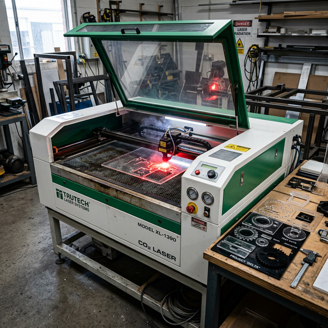
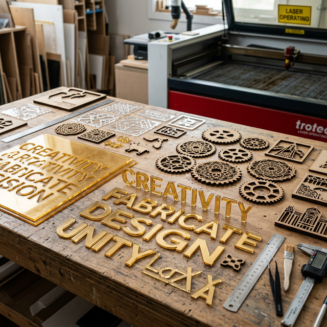
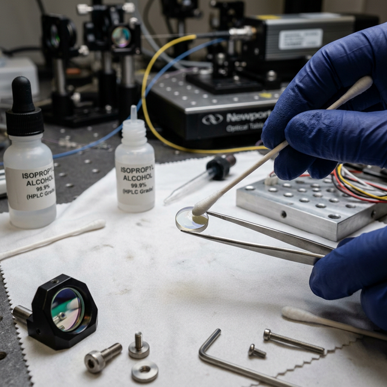

La Máquina Galaxy CO₂ 60W
Nuestra plóter de corte láser es una máquina de CO₂ de 60 vatios. El rayo láser es invisible para el ojo humano pero extremadamente peligroso. Trabaja siempre con precaución.

Especificaciones Técnicas
⚡ Potencia del tubo: 60W CO₂
🎯 Distancia focal: 7mm (boquilla–superficie)
💻 Software: RDWorks (Ruida Controller)
🌡️ Refrigeración: Chiller de agua destilada
💨 Extracción: Blower (extractor de humos)
Materiales que trabaja
Seguridad: el rayo láser es INVISIBLE y peligroso
El láser de CO₂ de 60W puede causar quemaduras graves en la piel y daño permanente en los ojos en fracción de segundos. Nunca apuntes el rayo hacia personas. Mantén la tapa cerrada durante el corte. Si el extractor no está encendido, no uses la máquina — los humos son tóxicos.

Software RDWorks
RDWorks es el programa oficial para controlar la plóter láser con controlador Ruida. Desde aquí importas los diseños, configuras velocidades, potencias y envías el trabajo a la máquina.
Áreas principales de la interfaz
💡
Puedes guardar los archivos como .RD para reutilizar trabajos frecuentes sin necesidad de reimportar.
Formatos de archivo aceptados por RDWorks
RDWorks acepta AI (Illustrator), DXF, PLT y opcionalmente SVG. Los diseñadores deben entregar los archivos vectorizados. Los JPG/PNG no son útiles para corte láser (no tienen rutas vectoriales). Para grabado/escaneo sí se usan imágenes rasterizadas.
Sistema de Colores en RDWorks
En RDWorks cada color del diseño corresponde a una acción diferente de la máquina. Este sistema es fundamental — si el color está mal, el láser hará lo que no debe. Apréndetelo de memoria.
El láser corta completamente el material de lado a lado. Usa alta potencia y baja velocidad. Para siluetas, contornos y piezas que deben desprenderse del material.
⚙️ Velocidad baja · Potencia alta · Corte total
Delineado: corte superficial o línea de doblez. No atraviesa completamente el material. Marca el contorno sin cortar de lado a lado. Potencia más baja que el corte total.
⚙️ Velocidad alta · Potencia baja · Marca superficial
Grabado / Escaneo: el láser barre el área línea por línea (como una impresora) para grabar texto, imágenes o texturas en la superficie. No corta, solo marca.
⚙️ Velocidad muy alta · Potencia baja · Relleno por barrido
Orden de procesamiento recomendado
Configura el orden de capas así: 1° Rojo (grabado) → 2° Azul (delineado) → 3° Negro (corte). Si cortas primero la pieza se mueve y el grabado queda desalineado. El orden correcto garantiza que la pieza esté quieta mientras se graba.
Calibración del Foco — 7mm
Esta es una de las configuraciones más importantes. Si el foco está mal, el corte es impreciso, quema de más o no penetra el material correctamente.
Distancia focal correcta
7 mm exactos
Desde la punta de la boquilla hasta la superficie del material debe haber exactamente 7 milímetros. A esta distancia el rayo láser está perfectamente enfocado y produce el corte más limpio y eficiente.
Materiales y Parámetros de Corte
Estos son los valores de velocidad y potencia para cada material. Guardarlos bien y consultarlos siempre antes de iniciar un trabajo nuevo.
REGLA DE ORO: Nunca superes el 80% de potencia
Operar el tubo láser al 100% de potencia de forma constante lo degrada y acorta su vida útil drásticamente. El límite máximo es 80%. Si un material necesita más potencia para cortarse, la solución es reducir la velocidad, no aumentar la potencia. Menos velocidad = el láser pasa más tiempo en cada punto = más energía = corte más profundo.
Tabla de Parámetros
⚠️ Estos valores son puntos de partida. Siempre haz una prueba en un recorte del material antes de cortar el trabajo completo. Los parámetros pueden variar con la temperatura, humedad y estado de los espejos.
| Tipo de Trabajo | Velocidad (mm/s) | Potencia Min. | Potencia Máx. | Notas |
|---|---|---|---|---|
| 🟡 Acrílico Dorado — 2mm de espesor | ||||
| 🔴 Escaneo / Grabado | 750 mm/s | 12% | 14% | Gap 0.06mm horizontal |
| 🔵 Delineado | 900 mm/s | 12% | 14% | Marca superficial suave |
| ⚫ Corte | 25 mm/s | 60% | 70% | Corte limpio y frío |
| 🪵 MDF — 3mm de espesor | ||||
| 🔴 Escaneo / Grabado | 750 mm/s | 12% | 14% | Gap 0.06mm horizontal |
| 🔵 Delineado | 900 mm/s | 12% | 14% | Marca para doblez o guía |
| ⚫ Corte | 21 mm/s | 70% | 80% | ⚠️ Máximo 80% de potencia |
| 📋 Más materiales próximamente | ||||
| Papel / Cartón | — por definir — | — | — | Se añadirá pronto |
| Cuero | — por definir — | — | — | Se añadirá pronto |
Si el corte no es completo… baja la velocidad
Por ejemplo si el acrílico no se corta bien a 25mm/s al 70%, prueba a 20mm/s al 70% en lugar de subir a 80% de potencia. El tubo te lo agradecerá con más años de vida.
Mantenimiento de la Máquina Láser
El sistema óptico del láser (lente y espejos) es extremadamente delicado. Un poco de polvo o grasa en el lente puede degradar el corte o incluso dañarlo permanentemente.

Señales de alerta — Detén la máquina y avisa
🔴 El corte es menos potente que antes (lente o espejos sucios). 🔴 El agua del chiller está turbia o con color. 🔴 Hay ruido extraño en el movimiento del carro. 🔴 El chiller registra temperatura superior a 25°C. 🔴 El extractor no succiona bien o hay olor excesivo a humo.
Archivos y Organización
Un buen sistema de archivos ahorra tiempo en el futuro. Aprovechar y reutilizar archivos es ser eficiente.
/Láser
📂 Reutilización inteligente de archivos
Cuando recibas un archivo de corte, pregúntate: ¿Este diseño se podría volver a pedir en el futuro? Si la respuesta es sí, guárdalo en la carpeta de categorías.
NO guardar en categorías
Recuerdos personalizados con nombre de persona, fechas específicas o diseños únicos irrepetibles. Ej: "Trofeo para Juan Pérez, bodas de plata 2026"
SÍ guardar en categorías
Cajas, lámparas, porta-retratos, figuras decorativas, letras
estándar, porta-celulares, etc. Ej: categorias/cajas/caja_lampara.rld
Ejemplo de estructura de carpetas
📁 PC_Laser/
├── 📅 2026-03-08/ (fecha de hoy - trabajos del día)
│ ├── trofeo_juan_perez.rld
│ └── caja_lampara_v2.rld
└── 📂 categorias/
├── 📂 cajas/
│ ├── caja_lampara.rld
│ └── caja_regalo_pequena.rld
├── 📂 letras/
├── 📂 porta_retratos/
├── 📂 decoracion/
└── 📂 recuerdos_genericos/Horarios de Trabajo
Estos son los horarios oficiales de VisualCorp para todos los departamentos.
💼
Llega puntual.
🎉
Reunión de los lunes
Los lunes se realiza una reunión de equipo para revisar trabajos pendientes, novedades, metas de la semana y cualquier tema importante. Es obligatoria la asistencia puntual. Llega a las 8:20 sin falta.
⚡
La precisión es tu oficio
El corte láser requiere paciencia, cuidado y atención al detalle. Cada milímetro cuenta. Tu trabajo transforma materiales ordinarios en piezas extraordinarias.
← Volver al inicio